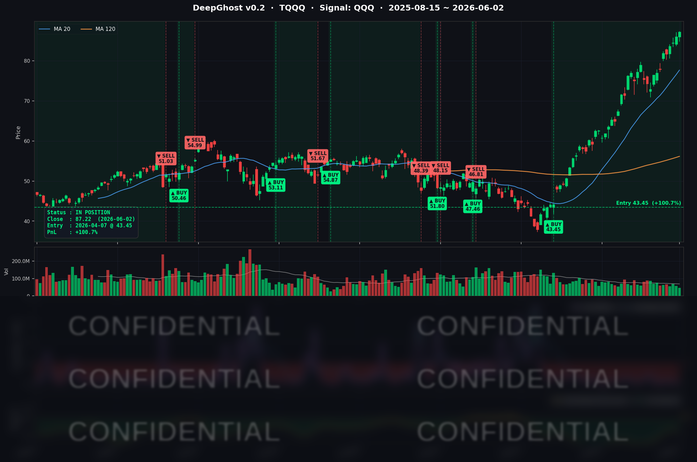

오늘도 유가/금리와 주가 방향은 반대입니다.
불안함 속에 이번 턴 TQQQ 수익이 100%를 넘었습니다.
백테스트 직접 해보시고 그래프를 그려본 구독자들은 아시겠지만, Ghost.AI 시그널은 추세 전환을 예측합니다.
Sell 시그널이 나오기 전까지 최고점에서 10~15%의 후퇴가 항상 있습니다. 이점 감안하시어 관리하시기 바랍니다.
📊 오늘의 매매 신호
| 항목 | 내용 |
|---|---|
| 오늘 할 일 | ✅ 아무것도 안 해도 됩니다 |
| 포지션 상태 | 📈 TQQQ 보유 중 (IN POSITION) |
| 매수 진입일 | 2026-04-07 (56일째) |
| 진입가 → 현재가 | $43.45 → $87.22 |
| 현재 포지션 수익 | +100.74% |
TQQQ 시그널 — IN POSITION
현재 상태: 매수 포지션 유지 중 | 누적 수익률 +100.74%

오늘 미국 시장 — 시황 요약
지수 마감
| 지수 | 종가 | 등락률 |
|---|---|---|
| S&P 500 | 7,609.78 | +0.13% |
| Nasdaq Composite | 27,093.90 | +0.03% |
| Dow Jones | 51,307.79 | +0.45% |
| Russell 2000 | 2,931.96 | +0.90% |
| QQQ | 746.16 | +0.46% |
| TQQQ | 87.22 | +1.37% |
오늘 미국 증시는 표면적으로 소폭 강보합이었지만, 속을 들여다보면 빅테크 내부의 분화가 극명했습니다. MSFT가 -4.17%, GOOGL이 -3.86% 급락하며 나스닥 상승폭을 +0.03%로 억눌렀습니다. 반면 AAPL이 사상 최고가를 갱신하며 +2.90% 급등했고, 소형주(Russell 2000 +0.90%)가 대형주를 상대적으로 아웃퍼폼했습니다.
국채 금리 & 연준
| 만기 | 수익률 | 전일 대비 |
|---|---|---|
| 3개월 | 3.618% | -0.2bp |
| 5년 | 4.177% | -0.9bp |
| 10년 | 4.455% | -2.0bp |
| 30년 | 4.967% | -2.4bp |
장기물(10년 -2bp, 30년 -2.4bp) 금리가 소폭 하락하며 주식 시장 전반에 우호적으로 작용했습니다. 10년물과 3개월물의 스프레드(+83.7bp)는 경기침체 우려가 해소된 정상화 구간을 유지하고 있습니다. 다만 30년물 4.97% 수준은 재정적자에 대한 장기 프리미엄이 여전히 높게 형성되어 있음을 보여줍니다.
오늘은 연준 위원 공식 발언이 없었습니다. 다음 FOMC는 6월 16~17일이며, 그 전인 6월 5일(금) 5월 고용보고서(NFP) 발표가 최대 변수입니다. JOLTS 구인 건수가 760만 건(예상 710만 건)을 크게 웃돌면서 6월 금리 인하 가능성은 시장에서 사실상 배제된 상태입니다.
오늘의 핵심 이슈
1. GOOGL, 800억 달러 규모 AI 인프라 증자 발표 → -3.86%
Alphabet이 총 800억 달러 규모의 신주 발행 계획을 공식 발표했습니다. 버크셔 해서웨이의 100억 달러 참여는 신뢰의 근거이지만, 400억 달러에 달하는 시장매출 프로그램이 장기 오버행 부담으로 작용했습니다. 구글이 신주를 발행한 것은 2005년 이후 처음으로, AI 인프라 투자 규모가 자체 현금창출 능력을 초과했음을 사실상 시인한 셈입니다.
2. MSFT, 규제·서비스 장애 악재 중첩으로 -4.17%
트럼프 대통령의 AI 소프트웨어 심사 행정명령, FTC 클라우드·AI 조사 확대, Copilot 서비스 대규모 장애가 동시에 겹쳤습니다. AI 모멘텀에 대한 시장의 재평가가 이루어진 하루였습니다.
3. AAPL, WWDC 2026 기대감에 사상 최고가 갱신 +2.90%
Apple 주가가 장중 $315.45를 기록하며 사상 최고가를 경신했습니다. 6월 8~12일 예정된 WWDC 2026을 앞두고 Morgan Stanley가 "AI 왕관을 결정하는 핵심 촉매"로 평가하며 상승을 이끌었습니다. MSFT·GOOGL의 AI 전략 신뢰 훼손이 Apple의 온디바이스 AI 전략을 상대적으로 부각시켰습니다.
매크로 & 원자재
| 항목 | 수치 | 비고 |
|---|---|---|
| WTI 원유 | $94.83 | +2.90% |
| Brent 원유 | $96.88 | +2.00% |
| 금 | $4,502.80 | +0.62% |
| VIX | 15.77 | -1.74% |
| 공포탐욕지수 | 57~59 | 탐욕(Greed) 구간 |
WTI가 +2.90% 급등하며 미-이란 협상 불확실성의 영향을 보여줬습니다. 트럼프 대통령이 "다음 주 안에 호르무즈 해협 합의 가능"이라고 발언했지만 협상 불확실성은 지속되고 있습니다. VIX 15.77은 시장 전반의 공포가 제한적임을 보여줍니다. 4월 JOLTS 구인 건수는 760만 건으로 약 2년 만에 최고치를 기록했습니다.
주요 종목 동향
| 종목 | 전일 종가 | 당일 종가 | 등락률 | 비고 |
|---|---|---|---|---|
| AAPL | 306.31 | 315.20 | +2.90% | 장중 사상 최고가 $315.45 경신. WWDC(6/8~12) 기대감 |
| NVDA | 224.36 | 222.82 | -0.69% | Computex 이후 단기 차익실현 |
| MSFT | 460.52 | 441.31 | -4.17% | AI 행정명령 + FTC 조사 + Copilot 장애 + PC 독점 완화 악재 중첩 |
| GOOGL | 376.37 | 361.85 | -3.86% | $80B AI 인프라 증자 발표 — 희석 우려, ATM $40B 오버행 |
| META | 600.47 | 597.63 | -0.47% | 빅테크 약세 흐름에 동조하며 소폭 하락 |
| AMZN | 261.26 | 256.52 | -1.81% | AWS 경쟁 우려 반영 가능성 |
| TSLA | 415.88 | 423.74 | +1.89% | 자율주행 모멘텀 유지, 개별 헤드라인 없음 |
| NFLX | 85.85 | 83.33 | -2.94% | 7거래일 연속 하락. 광고 수익 성장 및 경쟁 우려 |
| AVGO | 459.97 | 481.57 | +4.70% | Q2 FY2026 어닝(6/3 예정) 기대감 선반영 |
| QCOM | 228.99 | 240.84 | +5.17% | 전일 -8.78% 낙폭 과대 반동. AI·자동차·데이터센터 다각화 재평가 |
| INTC | 109.33 | 107.93 | -1.28% | 서버 CPU 점유율 상실 우려 지속 |
Ghost.AI — Quantitative AI Investment
Model: DeepGhost v0.2 | Transformer-Based Deep Learning
Coverage: 13 tickers | Updated every trading day after US market close
⚠️ 본 자료는 정보 제공 목적으로만 작성되었으며 투자 권유가 아닙니다. 모든 투자의 책임은 투자자 본인에게 있습니다. 과거 성과가 미래 수익을 보장하지 않습니다.
[유의사항]
고스트에이아이 주식회사는 「자본시장과 금융투자업에 관한 법률」 제101조에 따른 유사투자자문업자로 등록된 사업자입니다.
- 본 서비스는 불특정 다수를 대상으로 발행되는 단방향 정보 제공 서비스이며, 투자자 개인의 재산 상황·투자 목적·위험 선호도를 반영한 개별 투자 조언이 아닙니다.
- 고스트에이아이 주식회사는 고객과 쌍방향 의사소통(개별 상담, 맞춤형 자문 등)을 제공하지 않습니다.
- 본 콘텐츠는 투자 권유 또는 매매 주문의 청약·청약의 권유에 해당하지 않으며, 최종 투자 판단 및 그에 따른 손익의 책임은 전적으로 투자자 본인에게 있습니다.
고스트에이아이 주식회사 | 유사투자자문업 등록번호: 제2025-000호